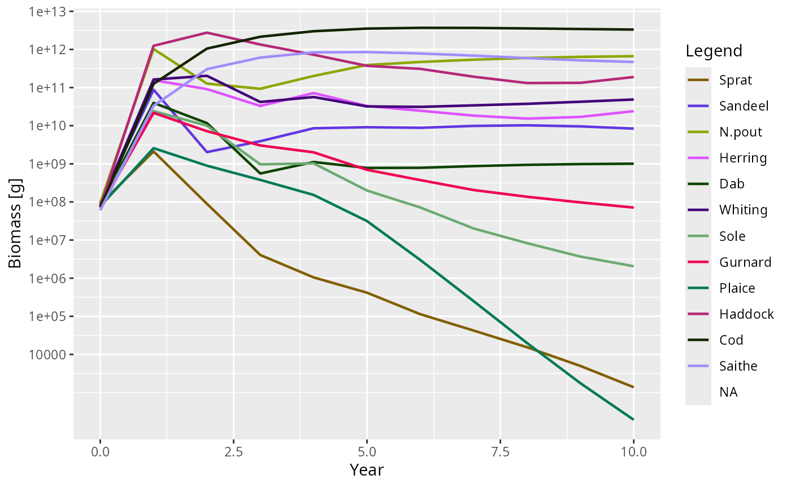
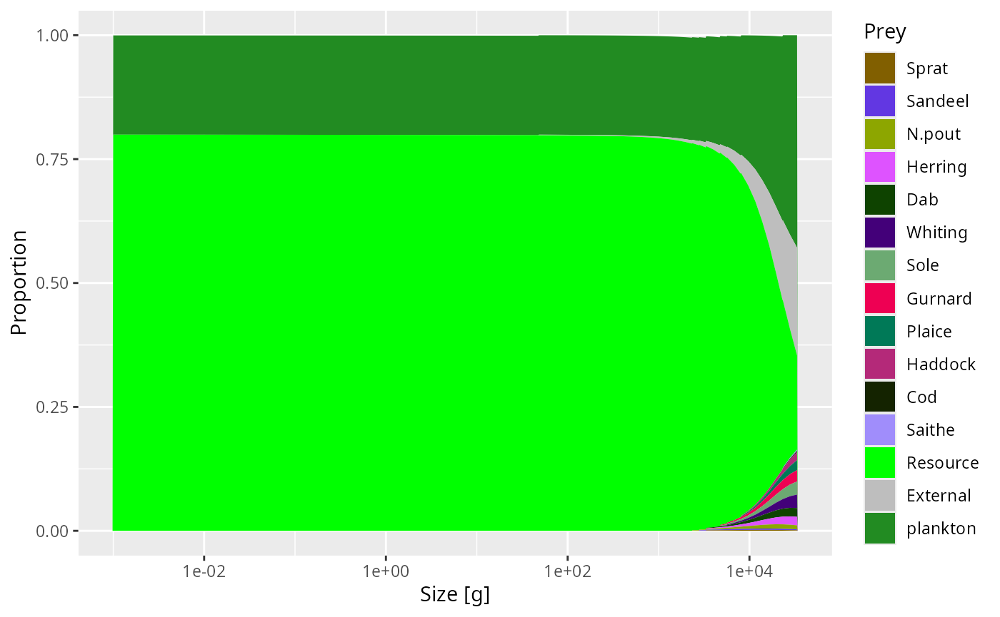

Using and adapting the mizer extension template
Source:vignettes/mizerExtensionTemplate.Rmd
mizerExtensionTemplate.RmdWhat this package is
mizerExtensionTemplate is a working mizer extension
package that you can clone and adapt. Every line of code is commented to
explain what is being done and why. Read the source
files alongside this vignette.
For the full conceptual background see:
-
vignette("extending-mizer", package = "mizer")— all five extension mechanisms with worked examples. -
vignette("creating-extension-packages", package = "mizer")— turning a script into a composable, shareable package.
The extension at a glance
mizerExtensionTemplate adds three things to a standard
mizer model:
| Mechanism | What it adds | Where |
|---|---|---|
setExtEncounter() |
Fixed allometric extra food | constructor.R |
setExtMort() |
Fixed background mortality | constructor.R |
projectEncounter S3 method |
Seasonal encounter multiplier | rate-methods.R |
setComponent("plankton") |
Dynamical plankton spectrum |
constructor.R + component-functions.R
|
getBiomass S3 methods |
Includes plankton in output | generic-methods.R |
Quick start
params <- newExtensionTemplateParams(NS_species_params)
sim <- project(params, t_max = 10)
plotBiomass(sim) # Plankton column appears automatically#> Warning in plotDataFrame(plot_dat, params, xlab = "Year", ylab = y_label, :
#> missing legend in params@linecolour, some groups won't be displayed
#> Warning: Removed 11 rows containing missing values or values outside the scale range
#> (`geom_line()`).
How the seasonal encounter works
The seasonal multiplier peaks at t = 0.25 (quarter-year)
and troughs at t = 0.75. With the default amplitude of 0.2
the encounter rate varies by ±20 % around its annual mean.
params_s <- newExtensionTemplateParams(NS_species_params, season_amplitude = 0.4)
enc_t0 <- getEncounter(params_s, t = 0) # multiplier = 1.0
enc_t025 <- getEncounter(params_s, t = 0.25) # multiplier = 1.4
range(enc_t025 / enc_t0, na.rm = TRUE)
#> [1] 1.4 1.4This seasonal effect is implemented in
projectEncounter.mizerExtensionTemplate()
(rate-methods.R). It calls NextMethod() to get
the base encounter rate (including the plankton contribution), then
multiplies by the seasonal factor. Using a project* method
rather than setRateFunction() means another extension
package can also modify the encounter rate without conflict.
How the plankton component works
The plankton is a vector spectrum stored on the full resource size grid. At each time step:
-
planktonEncounter()adds the plankton encounter contribution togetEncounter()by presenting the plankton as an extra resource. -
planktonDynamics()updates the plankton by solving the ODEdP/dt = r(K − P) − m·Panalytically over the time step, wheremis the predation mortality on the plankton spectrum.
plotDiet(params, species = "Cod")
Adapting this template for your extension
Rename the package: search and replace
mizerExtensionTemplate→ your package name throughout all files, includingDESCRIPTION, the R files,NAMESPACE, and this vignette.-
Decide: metadata-only or dispatching?
-
Metadata-only (like
mizerStarvation): deletemizerExtensionTemplate-class.R, remove thesetClass()calls, and remove thecoerceToExtensionClass()call at the end of the constructor. Keepparams@extensions <- getRegisteredExtensions(). -
Dispatching (like
mizerShelf): keep everything and define S3 methods for the generics you need to override.
-
Metadata-only (like
Remove mechanisms you don’t need: each of the five mechanisms in
constructor.Ris independent. Delete the blocks that do not apply to your extension.Replace the plankton component with your own component, or remove
setComponent()entirely if you don’t need a dynamical state variable.Run
devtools::document()to regenerateNAMESPACEfrom the roxygen2 tags, thendevtools::test()anddevtools::check()before publishing.